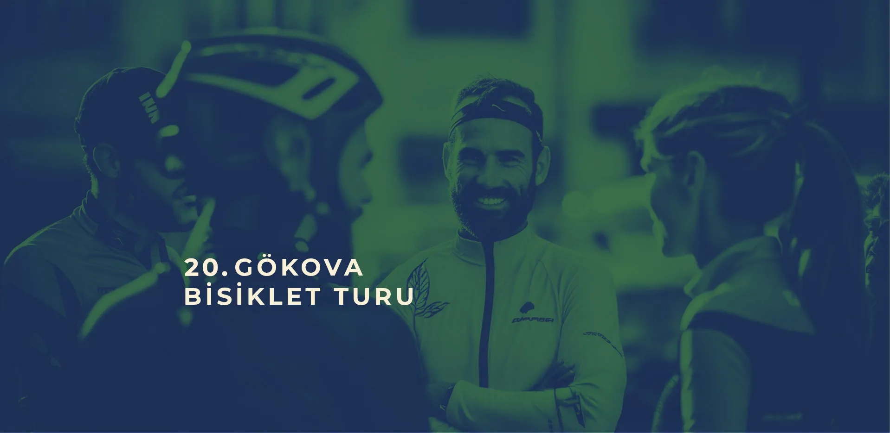
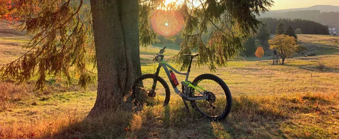
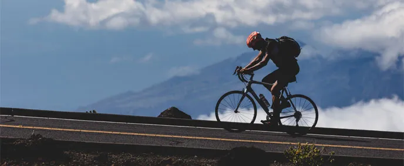
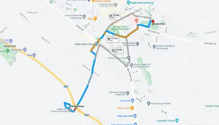

BİLGİLER
TUR NEREDE BAŞLAYIP NEREDE BİTECEK?
Bu yıl 20. kez tekrarlayacağımız Gökova Bisiklet Turu’muzu 180 katılımcı + 20 misafir ve organizasyon ekibi olarak yaklaşık 200 kişi ile gerçekleştireceğiz. Tura Muğla’dan başlayıp, Gökova Körfezi’ni saat yönü tersi dönerek Akyaka’da tamamlayacağız.
YOLLAR NASIL, HANGİ BİSİKLETLE GELMELİYİM?
Bütün parkur stabilize asfalt yollardan oluşuyor. Tur rotaları her tip yol, tur, hibrid, kros, dağ bisikletine uygun olmakla birlikte, ince ve dişsiz lastikli bisikletler için bir kaç noktada sıkıntı doğurabilir.
Bisikletlerinizin bakımının, parça değişimlerinin tur öncesi eksiksiz tamamlanmasını, tur sırasında gerekli yedek lastik, pompa vb. bulundurulmasını öneririz.
Her bisiklet sürücüsü kendi güvenliğinden birinci derecede sorumludur. Uygun kıyafetler kullanmalı, kask takmayı ihmal etmemeliyiz.
EŞİM/YAKINIM ARAÇLA BENİ TAKİP EDEBİLİR Mİ?
Gruba tur boyunca eşlik edecek özel araçlar ve sürücüleri aynı bisikletçiler gibi (eşlik edecekleri kişiyi belirterek) mail yoluyla kayıt olmalı ve ücretlerini ödemeliler!
EŞYALARIMIZI BİSİKLETTE Mİ TAŞIYACAĞIZ?
Yol boyunca, eşyalarımızı taşıyan bir kamyon, acil müdahale, su tedariki ve ilk yardım için araç, kılavuzluk hizmetleri için motosikletli bir grup takip edecek.
RAMPALARDA ZORLANIYORUM YORULDUĞUMDA BİR ARACA BİNEBİLİR MİYİM?
Bisiklet taşıma aracı veya katılımcılar için shuttle yoktur. Tur boyunca rampalar, yorgunluk veya keyfi tercihlere göre taşıma yapılmamaktadır.
YOLDA TEKNİK DESTEK ALACAK MIYIZ?
Teknik servis hizmetimiz tur boyunca yanımızda olacak. Fakat grup uzayacağından dolayı yolda karşılaşacak minimum ihtiyaçları (lastik değiştirmek, yamamak) katılımcı kendi gidermekle yükümlüdür.
Katılacak bisikletçilerin grup kurallarına uymalarını, trafik ve organizasyon düzenleyicilerinin uyarılarına özen göstermesini beklemekteyiz. Organizasyon yetkililerine kimliğini ve mazeretini paylaşmadan gruptan ayrılanlar için destek hizmetimiz yoktur.
YANIMIZDA NE GETİRMELİYİZ?
GBT bu yıl 28 Eylül – 02 Ekim tarihleri arasında yapılacak. Yani seçtiğimiz tarihler havanın kimi zaman yağışlı, kimi zaman da güneşli olabileceği bir dönem. Yani baharın en güzel tarihleri. Hem yağmurluk, hem mayo, hem güneş kremini ihmal etmeyelim. Kamp malzemelerimizi (çadır, uyku tulumu, mat ve minimum kişisel ihtiyaçlarınızı, giysi, çamaşır, ilaç, krem vs. ) eksiksiz getirelim.
Bagajlarımızı sabah erkenden kamyona teslim edeceğiz, akşam kamp yerinde teslim alacağız. Programın özelliğine göre gün içerisindeki ihtiyaçlarımızı sabah araç yüklenmeden yanımıza almayı da unutmayalım.


20. GÖKOVA BİSİKLET TURU
Tur 28 Eylül 2026 sabahı saat 09.00’da Muğla Konakaltı Kültür Merkezi’ndeki kahvaltı, teknik toplantıdan ve açılış konuşmasından sonra başlayacak ve 02 Ekim’de Akyaka’da sona erecektir. Muğla’ya erken gelenler eşyalarını Kışla Parkı’na bırakıp özel araçlarını Akyaka’ya park edebilirler. Muğla’ya 15 dk’da bir kalkan dolmuşlar ile yine Kışla Parkı’na dönebilirler. Kayıt ve konaklama alanı Muğla Kışla Parkı’dır.
Konaklayacağımız bazı yerler ne yazık ki yeterli alt yapı uygun değil. Bazı kamp yerlerinde tuvalet ve sıcak su sıkıntısı yaşayabiliriz. Bu sorunları gidermek için yine çalışacağız. Bunun dışında Bodrum – Zetaş ve Çubucak Orman Kampları yeterli altyapıya sahip.
Bizden başka insanların da konakladığı bu tesislerde çok özenli davranmanızı rica ediyoruz. İsteyenler pansiyon ve otel seçeneklerini kendileri karşılamak koşuluyla değerlendirebilir.
KENDİ ARACI İLE GELENLER
Turumuz Akyaka’da sona ereceğinden kendi aracı ile gelenlerin Kışla Parkı’na yerleştikten sonra araçlarını Akyaka’da uygun yerlere park edebilirler. Akyaka’dan Muğla’ya 15 dk aralıklarla kalkan dolmuşlar ile de Kışla Parkı’na dönebilirsiniz. Eğer aracınız tur boyunca size eşlik edecek ise Datça-Bodrum Feribot geçişinde feribottan yararlanmanız ancak yer olması ve ücretini kendiniz ödemeniz halinde mümkün olacaktır. Lütfen feribotla geçecek aracınızın plakasını önceden bizimle paylaşınız.
KIŞLA PARKI KAMP YERİNE ULAŞIM

Yeni Muğla Otogarı ile Kışla Parkı arası 4,5 km. Otogar çıkışından şehir merkezi yönlendirmesini takip ederek Dirgeme yolunu takip ediyoruz. 1.4 km sonra sola 400 m sonra sağa dönerek Atatürk Bulvarı’na çıkıyoruz. Bulvarı solunuzda tutarak karşıya geçerek Muğla Şehir Stadını görene dek devam ediyoruz. Stadın önünden sağa Hasan Ali Yücel Caddesi dönünce yol bizi Zihni Derin Caddesine dek taşıyor. Bu caddenin bittiği yer bizi Kışla Parkı önüne getiriyor. Sola Haluk Özsoy Caddesine döner dönmez 100 metre sonra parkın girişi sağınızda kalıyor.
KAYIT VE FORMALARIN TESLİM ALINMASI
Kamp yerine ulaştığınızda lütfen önce Kayıt Masası’na gelerek sizin için hazırlanmış olan paketlerinizi teslim alınız. Bu pakette şunlar olacak:
• Kayıtta belirttiğiniz ölçüde tur formanız.
• Eşyalarınızı taşıma kamyonuna verirken içine koymanızı istediğimiz çuval ve ip.
• Bisikletinize asmanızı istediğimiz ve plakanız.
FORMALAR
Turumuzun ilk günü Konakaltı kültür merkezinde toplu fotoğraf çekmeyi isteğimiz 28 Eylül günü tur formalarımızı giymiş olmanızı özellikle rica ediyoruz. Bu yılda formamız sınırlı, kayıt formunda verdiğiniz boy size uygun gelmese bile değiştirme şansımız olmayacak, ancak katılımcılar arası değiş – tokuş olanağınız olacak. Sizin kayıtlı bir tur katılımcısı olduğunuzu bilebilmemiz için lütfen rozetinizi tur boyunca yanınızda bulundurun, bisikletinizin de uygun bir yerine plakanızı asmayı ihmal etmeyin.
TAŞIMA ÇUVALLARI
Günlük sürüş sırasında yanınızda taşımayacağınız kamp malzemesi ve çantalarınızı da sizler için hazırladığımız, üzerinde adınızın ve katılımcı numaranızın olacağı çuvallara koyarak taşıma kamyonuna vermenizi rica ediyoruz. Çuvallar bir sonraki kamp alanında uygun bir yerde kamyondan indirilmiş olarak sizleri bekleyecektir. Çuvalınızın üzerine ayırt edebileceğiniz farklı renkte ayrı bir bant eklemeniz veya ayırt edici bir işaret koymanız akşamları onu bulmanızı kolaylaştıracaktır. Lütfen eşyalarınıza gün içinde ulaşmanın mümkün olmadığını düşünerek ihtiyacınız olacak yedek giysi, yolda vereceğiniz kısa yüzme molası için havlu-mayo vb. yanınıza almayı unutmayın.
CEP TELEFONLARININ ŞARJI
200 dolayında katılımcının cep telefonu, kameraları, güç kaynaklarının akşamları şarj edilmesi başlı başına bir organizasyondur. Bu amaçla bir sürü çoklu prizi akşamları kullanımınıza sunuyoruz. Lütfen ortak alanlarda şarj edeceğiniz bu tür tüm aletlere adınızın, cep tel. numaranızın ve sizi tanıyan, ikinci bir katılımcının adının ve onun cep numarasının olduğu bir çıkartma yapıştırın.
KAYIP / HIRSIZLIK
Turlarımızda bugüne dek hırsızlık sorunu yaşanmamıştır. Burada konu etmemizin nedeni genellikle karıştırma, unutma, kaybetme olaylarıyla ilgilidir. Böyle bir durumda hemen organizasyon komitesine bilgi verin. Eğer unutulmuş bir şey bulmuşsanız görevlilere teslim ediniz.
200 katılımcı içinde aynı marka cep telefonu kullananların sayısının az olmayacağından emin olabilirsiniz. Lütfen unutma ihtimaliniz olan her türlü malzemeniz üzerinde adınızın olmasına dikkat edin. Yine de tedbirli olmanızı; cüzdan, telefon, kamera gibi malzemenizi sürekli yanınızda taşıyabileceğiniz uygun boyutta bir çantada tutmanızı ve akşam saatlerinde de çadırınıza almanızı öneririz.
Kural olarak herhangi bir kayıp – çalıntı durumunda sorumluluk üstlenmediğimizi hatırlatmak isteriz.
YEMEK, SU VE YOL BOYU İKRAMLAR
Her yıl olduğu gibi yemeklerimizi yine tek kullanımlık tepsilerde vermek zorundayız. Bu da bir çevre kirliliği demek. Lütfen tepsinize yiyebileceğiniz kadar yemek almaya, artıkları önce çöp bölgesindeki kovalara boşaltıp tepsileri üst üste koymaya çalışın.
Yine sürekli bulaşık yıkama zorluğundan dolayı çatal-kaşık-bıçak da plastik ve tek kullanımlık malzemeden olacak. Ancak kendinize ait çatal kaşığı yanınızda getirerek yarattığımız plastik atık miktarını azaltmaya katkıda bulunursanız buna saygı duyarız.
Öğlen yemeklerinde yemek dağıtımının çok uzun süreye yayılması sorunu nedeniyle menüyü az çeşitli, ama doyurucu, besleyici olarak düzenledik. Bu nedenle de sabahları yola çok geç çıkmamanızı, yolda vereceğiniz molaları kısa tutmanızı rica ediyoruz.
Kamp alanlarımızda, öğlen yemeği molalarında kullanmak üzere masa ve tabure kiralıyoruz. Lütfen bunları dönüşümlü kullanma konusunda birbirimize destek olalım.
Yine su dağıtımında fazla çevre kirliliği yaratmamak için küçük şişe dağıtmak yerine pompalı bidonlar kullanacağız. Lütfen su kaplarınızı sabah ve öğlen yemek dağıtım bölgelerine kuracağımızı istasyonlardan doldurun. Ayrıca yol boyunca yokuş başlarında, uygun noktalarda yine su istasyonları kuracağız.
Zaman zaman yol boyunda tatlı, meyve, küçük atıştırmalıklar gibi ikramlarımız olacak.
Yemekleri alacağımız yer ve öngördüğümüz menüyü de sizlerle tura 1-2 hafta kala paylaşacağız.
BİSİKLET SÜRERKEN
Sınırlarınızı zorlamayın; yorulunca dinlenin. Kask ve eldiven takmadan bisiklet sürmeyin. Trafiğin yoğun olduğu yollarda yolun sağından ve tek sıra yol almaya dikkat edin.
Eskort aracının gerisinde kalmayın, kalacaksanız mutlaka kimlik bilginizi artçımızla paylaşın. Kurallara uygun davranmayan bisikletçileri kırıcı olmadan uyarın.
Cep telefonunuzu yanınızda bulundurun. Kullanmıyorsanız mutlaka cep telefonu olan birisiyle birlikte olun.
Fazla sıkışık gruplar halinde bisiklet sürmeyin, ara mesafeye dikkat edin. Önünüzdekini geçerken uyarın. Sağdan geçmeyin. Durmak zorunda kalırsanız arkanızdan gelenlere engel olmamaya dikkat edin.
Yokuş inişlerinde daha dikkatli ve yavaş olun; özellikle virajlarda zeminin kumlu olabileceğini, kayabileceğinizi unutmayın.
Herhangi bir nedenle geride kalırsanız artçı motorumuza mutlaka ad ve katılımcı numaranızı bildirin. Grup sorumlunuzla iletişim içinde kalın. Aynı şekilde süratli yol almak isteyenler öncü aracını geçecek olurlarsa mutlaka ad ve katılımcı numarasını bildirmelidir.
Verilen depar saatine uyum, yola çıkışta yer yer bir süre ana trafik hattından eskort korumasında yol alınacağı için çok önemli.
OTELLER
Kamp alanlarımıza yakın ve bizler için uygun fiyat veren otelleri paylaşalım istedik. Dilerseniz rezervasyon-ödeme gibi tüm ilişkinizi doğrudan kendiniz kurarak buralarda kalabilirsiniz. Muhtemel program değişiklikleri ve her türlü duyuru kampta olacağından, lütfen sabahları erken kamp alanlarında olmaya çalışın.
Lütfen daha fazla bilgi için otellerle doğrudan temasa geçin.
Muğla; YALÇIN OTEL Tel: 0252 214 15 99
Bodrum; GREEN HOUSE APART – Gümbet Tel: 0252 319 4236
QUEEN RESORT HOTEL – Gümbet Tel: 0252 319 5919
MAVİ YEŞİL YAŞAM OTEL – Gümbet Tel: 0252 319 2666 – 0530 159 3911
BİSİKLET KİRALAMA
Yurtiçi katılımcılarımız için önerdiğimiz bisiklet kiralama şirketlerini aşağıda bulabilirsiniz:
Bodrum Bisiklet Tel: 0252 313 00 88
Tarkan Bisiklet Tel: 0252 262 1950
Cep Tel: 0532 353 4317
Pedalla Bisiklet Tel: 0252 214 7696
Cep Tel: 0545 733 2552